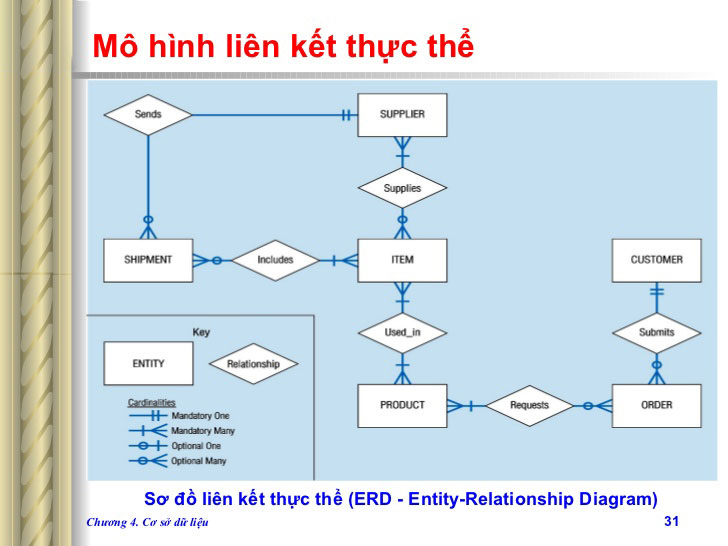
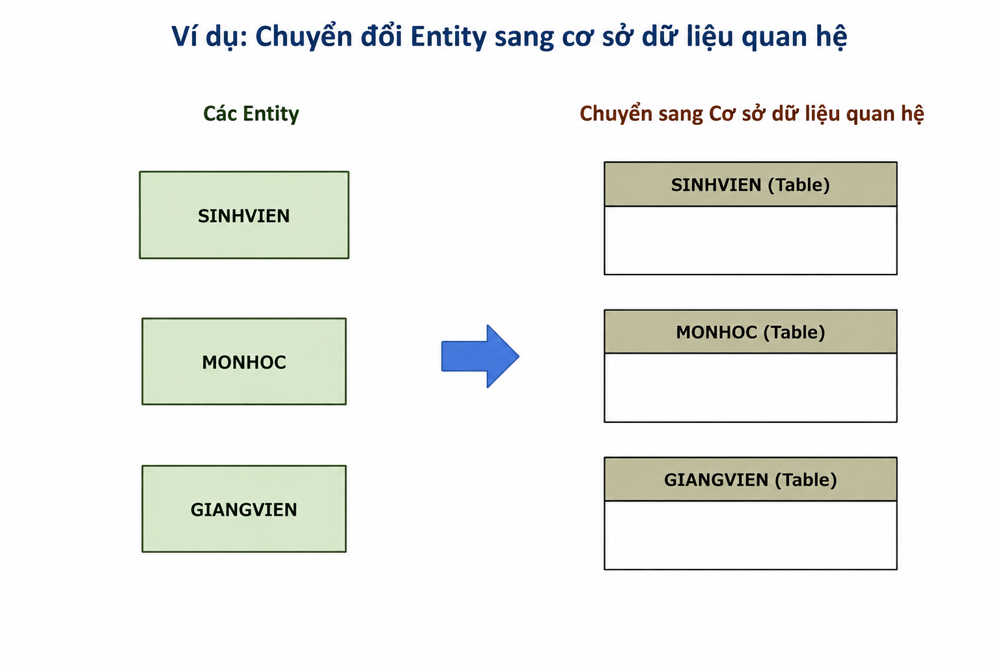
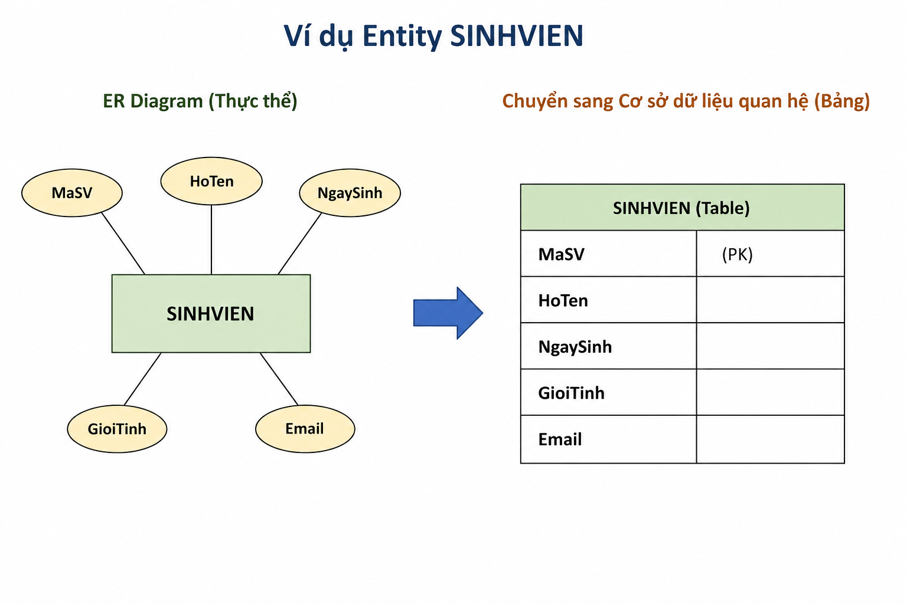
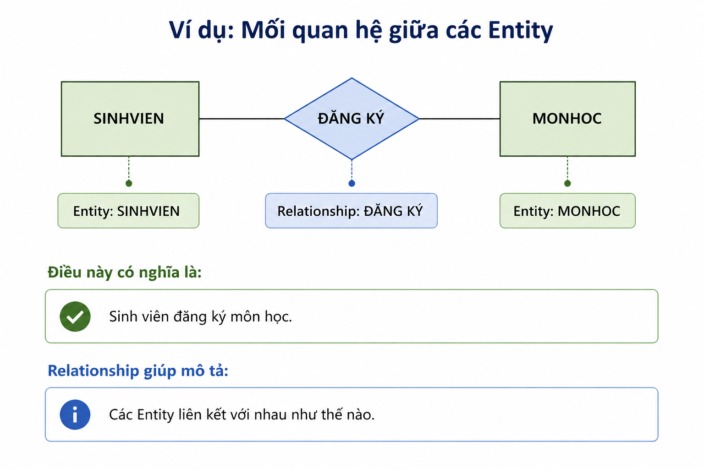
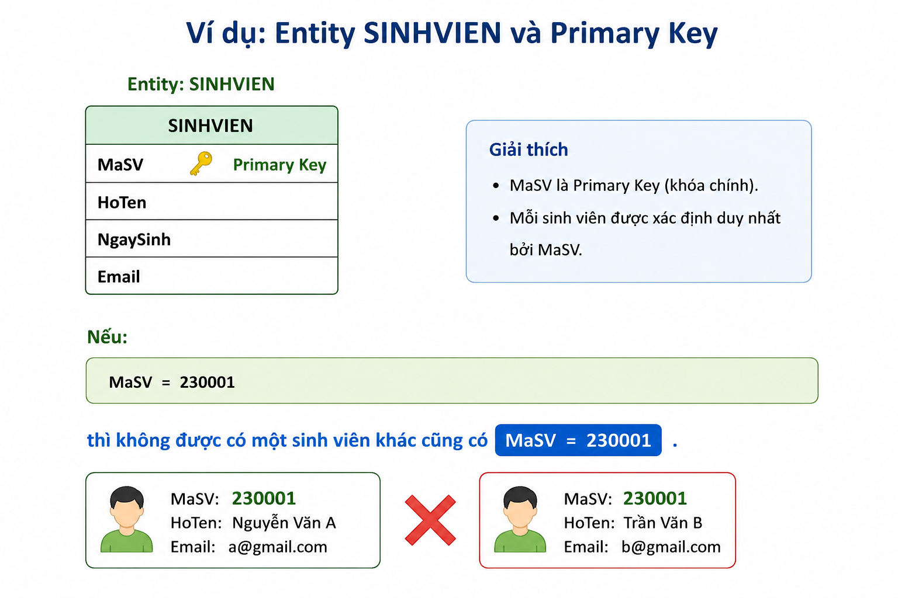
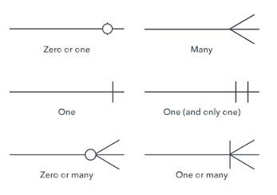

Mục lục
ERD (Entity Relationship Diagram) là sơ đồ thực thể – mối quan hệ, được sử dụng để mô tả cấu trúc và mối quan hệ giữa các dữ liệu trong một hệ thống cơ sở dữ liệu.
ERD giúp xác định:
ERD ERD thường được xây dựng trước khi tạo cơ sở dữ liệu thực tế, giúp người thiết kế có cái nhìn tổng quan về dữ liệu và hạn chế sai sót khi xây dựng hệ thống.
Hình ảnh minh họa

Một ERD thường bao gồm 3 thành phần cơ bản:
Entity là đối tượng hoặc khái niệm mà hệ thống cần lưu trữ thông tin.
Ví dụ trong quản lý trường học:
Ví dụ:

Attribute là những đặc điểm hoặc thông tin dùng để mô tả một Entity.
Ví dụ Entity SINHVIEN có:

Khi chuyển sang cơ sở dữ liệu dữ liệu quan hệ, các Attribute thường trở thành các cột (Column) của bảng
Relationship thể hiện sự liên kết giữa các Entity
Ví dụ:

Primary Key (PK) là thuộc tính hoặc tập hợp thuộc tính dùng để xác định duy nhất mỗi bản ghi trong một bảng.
Ví dụ:

Đặc điểm của Primary KeyForeign Key (FK) là thuộc tính dùng để tạo liên kết giữa các bảng.
Cardinality cho biết số lượng bản ghi của Entity này có thể liên kết với bao nhiêu bản ghi của Entity khác.
Có 3 dạng phổ biến:
Một đối tượng của Entity A liên kết với một đối tượng của Entity B.
Một đối tượng của Entity A có thể liên kết với nhiều đối tượng của Entity B.
Một đối tượng của Entity A có thể liên kết với nhiều đối tượng của Entity B và ngược lại.
Ví dụ hình ảnh các mối quan hệ:
